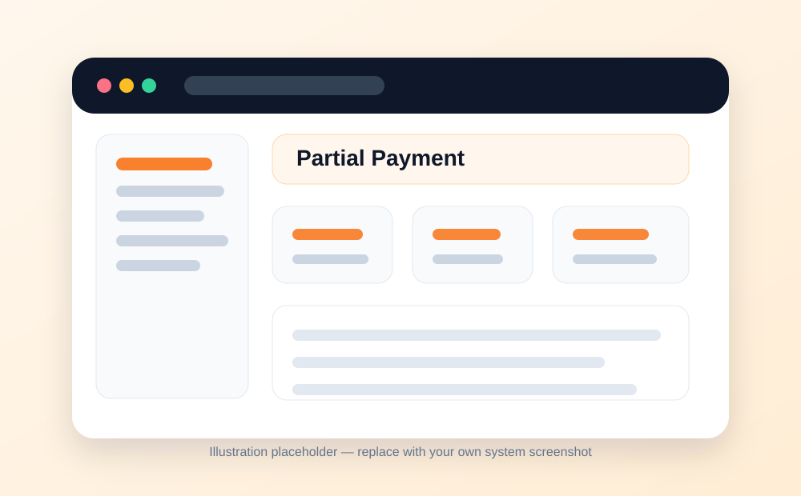
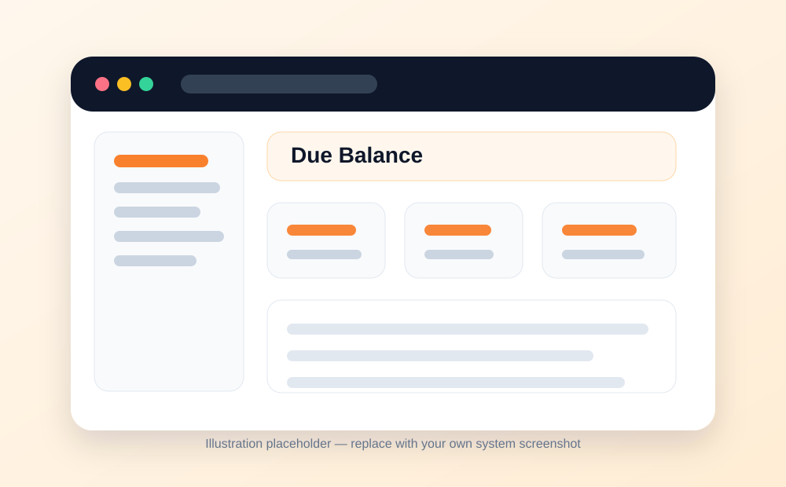
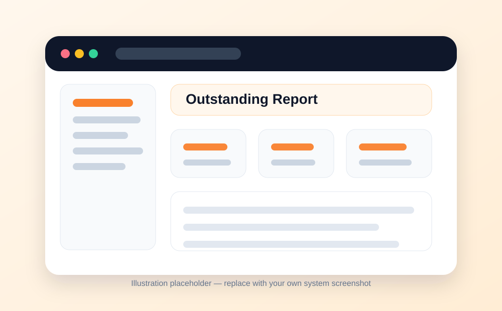
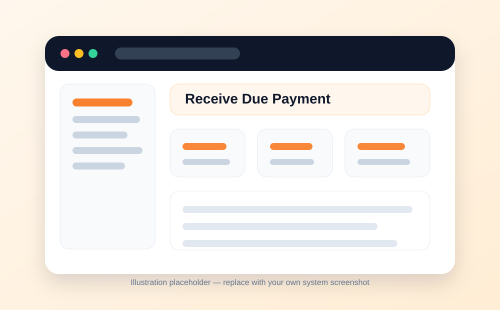

🧮
Sales & Finance
Due Payment Reports
Track partially paid orders, outstanding balances, and later settlement of due amounts.
What this module is for
- Due payment reporting helps the restaurant monitor orders that were not fully paid at billing time.
- When a customer pays only part of the bill, the remaining amount is recorded as due.
- When the balance is later paid, the payment is recorded for tracking and reconciliation.
When this is useful
- A customer pays partially at the time of billing.
- A bill is split and one portion remains unpaid.
- A customer pays an advance and settles later.
- A trusted customer or corporate client leaves a pending balance.
Typical workflow
- Create or bill the order.
- Record the paid amount and leave the unpaid balance as due.
- Review outstanding balances from the due report.
- When the customer pays the balance, record the due payment.
- Confirm the due amount becomes zero and the settlement appears in the report.
Good practice
- Review due balances daily.
- Set an internal rule for who can approve due payments.
- Follow up unpaid balances quickly.
- Use the report to prevent revenue leakage and improve financial control.
Screens / visual guide
The images below are clean placeholders prepared for the documentation website. Replace them with screenshots from your own installed system when you are ready.



